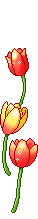

Aperte no gatobruxo!

Gostaria de lhe dizer várias coisas, o quanto eu te amo, o quanto eu te quero, te admiro, como eu te vejo, mas nem todas as palavras e sinônimos do mundo conseguem descrever o que eu realmente sinto por você. você me faz sentir um frio na barriga gostoso, me faz sentir várias coisas boas , e eu só consigo pensar em você, náo consigo parar de pensar em você.
Me desculpe se te fiz se sentir mal, ou pensar qualquer coisa ruim a nosso respeito, nunnca foi a minha intenção, pois a minha intenção contigo é finalmente colocar um anel que caiba no seu dedo e te fazer ser a minha esposa no papel, pois na minha vida você já é minha esposa, minha mulher, minha bruxinha, minha vidoca, você é tudo o que eu sempre sonhei, e eu te amo muitão minha princesinha linda. Eu te amo muito minha princesinha, você é o meu primeiro pensamento quando eu acordo, e o último qunado eu durmo, eu só sei que te amo, e que quero passar o resto da minha vida contigo, por que eu escolhi te amar e é a escolha que eu nunca vou me arrepender , por que eu te escolho todo dia, desde o ensino médio, mesmo que não me notasse, agora que me nota, é claro que eu nunca vou voltar átras com a minha escolha, porque você é a melhor escolha que eu já fiz nessa minha vida, e eu nunca vou me arrepender por ter te escolhido
com amor,
O seu namorido